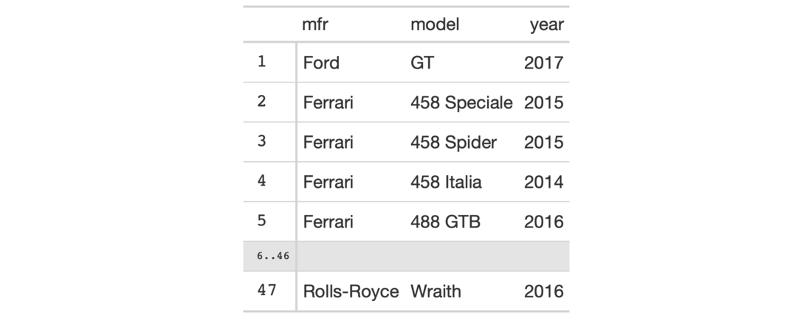

Sometimes you may want to see just a small portion of your input data. We can
use gt_preview() in place of gt() to get the first x rows of data and the
last y rows of data (which can be set by the top_n and bottom_n
arguments). It's not advised to use additional gt functions to further
modify the output of gt_preview(). Furthermore, you cannot pass a gt
object to gt_preview().
gt_preview(data, top_n = 5, bottom_n = 1, incl_rownums = TRUE)
| data | A |
|---|---|
| top_n | This value will be used as the number of rows from the top of
the table to display. The default, |
| bottom_n | The value will be used as the number of rows from the bottom
of the table to display. The default, |
| incl_rownums | An option to include the row numbers for |
An object of class gt_tbl.
Any grouped data or magic columns such as rowname and groupname will be
ignored by gt_preview() and, as such, one cannot add a stub or group rows
in the output table. By default, the output table will include row numbers in
a stub (including a range of row numbers for the omitted rows). This row
numbering option can be deactivated by setting incl_rownums to FALSE.

1-2
Other Create Table:
gt()
# Use `gtcars` to create a gt table # preview (with only a few of its # columns); you'll see the first five # rows and the last row tab_1 <- gtcars %>% dplyr::select(mfr, model, year) %>% gt_preview()